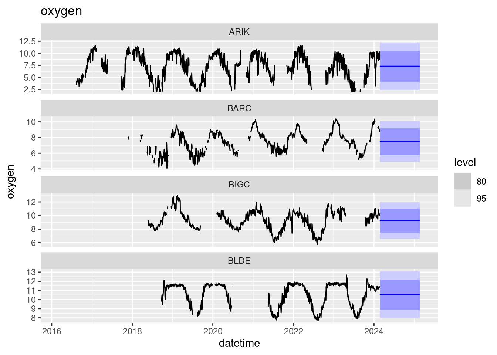

library(neonstore)
library(neon4cast) # remotes::install_github("eco4cast/neon4cast", dep=TRUE)
library(tidyverse)
library(tsibble)
library(lubridate)
library(fable)A trivial forecast
forecast_date <- Sys.Date() - days(35)Access Target Data
targets <-
"https://data.ecoforecast.org/neon4cast-targets/aquatics/aquatics-targets.csv.gz" |>
read_csv(show_col_types = FALSE)
targets_ts <- targets |>
as_tsibble(index = datetime, key = c(variable,site_id))past <- targets_ts |> filter(datetime < forecast_date) |>
pivot_wider(names_from="variable", values_from="observation")Compute a forecast
## Compute a simple mean/sd model per site... obviously silly given huge seasonal aspect
null_temperature <- past |>
model(null = MEAN(temperature)) |>
forecast(h = "1 year")
null_oxygen <- past |>
model(null = MEAN(oxygen)) |>
forecast(h = "1 year")Visualize the forecast
first4 <- unique(null_temperature$site_id)[1:4]
null_temperature |> filter(site_id %in% first4) |>
autoplot(past) + ggtitle("temperature")null_oxygen |> filter(site_id %in% first4) |>
autoplot(past) + ggtitle("oxygen")
EFI Formatting
EFI requires a flat-file format for forecasts that avoids the use of complex list columns.
To convey uncertainty, forecasts must be expressed either by giving mean and standard deviation (for predictions that are normally distributed) or must express forecasts as an ensemble of replicate draws from forecast distribution. The helper function efi_format() handles this transformation.
forecast <-
bind_rows(efi_format(null_temperature),
efi_format(null_oxygen)) |>
mutate(reference_datetime = forecast_date)scores <- neon4cast::score(forecast, targets)
scores |>
score4cast::include_horizon(allow_difftime = TRUE) |>
group_by(variable) |>
summarise(crps = mean(crps, na.rm=TRUE),
logs = mean(logs, na.rm=TRUE))forecast_file <- glue::glue("{theme}-{date}-{team}.csv.gz",
theme = "aquatics",
date=forecast_date,
team = "cb_f1")
write_csv(forecast, forecast_file)neon4cast::forecast_output_validator(forecast_file)[1] TRUEsubmit(forecast_file)unlink(forecast_file)